Zorbawic's Map Design Help in Polish language (Jak zrobić mape do Springa - po Polsku)

|
sorry, this is deprecated. we can't currently maintain foreign languages |
ENGLISH - UNDER CONSTRUCTION
This wiki page is a small tutorial for Polish mappers who encounter lingual problems when reading english mapping tutorials for the SMF map format
POLSKI - W BUDOWIE
Ta strona wiki jest krótkim tutorialem dla polskich fanów Spring'a mających problem ze zrozumieniem angielskojęzycznych tutoriali dla formatu SMF
Tutorial napisany jest w założeniu, że nie dysponujesz zbyt mocną maszyną.
(Elementy dodatkowe - przydatne dla "lajkoników" będą zaznaczone <ELEMENTY DODATKOWE> oraz <KONIEC ELEMENTÓW DODATKOWYCH>)
zakładam, że używasz Windowsa XP i nie masz zielonego pojęcia o obsłudze programu graficznego co nie oznacza że ten tutorial może się nie przydać w innych przypadkach ;) ...
NIE BĘDĘ OWIJAÃ…Â W BAWEÃ…ÂNĘ dlatego od razu przechodzimy do rzeczy...
<ELEMENTY DODATKOWE>
zanim zabierzemy się za robienie mapy musimy sprawdzić ile masz wolnej pamięci RAM oraz ile masz wolnego miejsca na dysku:
- naciśnij kombinację klawiszy Alt+Ctrl+Del i powinno pojawić się okno Menedżera zadań (lub okno w którym będzie przycisk "Menedżer zadań" - jeśli jest naciśnij go). Na tym etapie pojawi się okno "Menedżer zadań Windows" z otwartą zakładką (kartą) "Aplikacje". Klikamy zakładkę (kartę) "Wydajność" i tu czytamy interesujące nas informacje :
- na samym dole okna po prawej stronie mamy "Pam. zadeklar.: xxxM / zzzzM". z tej informacji wyczytać możemy, że masz zajęte xxx megabajtów, a całkowita ilość przestrzeni na tzw. plik stronicowania to zzzz megabajtów. Przy robieniu dużych map będzie to dla nas ważna wiadomość - tzn jeśli wartość po lewej zrówna się z wartością po prawej - najprawdopodobnie wyskoczy nam ERROR i program graficzny się wyłączy nie zapisując efektów pracy - a tego nie chcemy.
- inną ważną dla nas wartością z tego okna jest sekcja "Pamięć fizyczna (KB)". Z niej możemy wyczytać ile jest w ogóle pamięci RAM w komputerze - "Razem yyyyyyy" (przy czym zrozumiałą dla laika wartość otrzymamy po podzieleniu wartości yyyyyyy przez 1024). Na środku tej sekcji mamy "Dostępne vvvvvv". Ta wartość oznacza ile mamy "wolnego ramu". Jeśli wartość ta spadnie do zera albo będzie badzo blisko - zauważymy znaczne spowolnienie komputera i programu graficznego jaki używamy
otwórz "mój komputer", kliknij prawym przyciskiem myszy na dysk C:, pojawi się menu, z którego wybierz "właściwości". W oknie które powinno się pojawić powinieneś widzieć ilość wolnego miejsca.
Jeśli masz inne dyski twarde oznaczone kolejnymi literami alfabetu to sprawdź także ilość wolnego miejsca na pozostałych dyskach w podobny sposób.
Na tym etapie musisz zdecydować, czy zwolnić trochę miejsca na dysku przez skasowanie czegoś (jeśli tak to zrób to rozważnie), czy zamierzasz kompresować efekty pracy do mniejszych rozmiarów pliku czy też nie nie. Od tego zależy ile miejsca będą zajmować pliki na dysku, potrzebne do otrzymania gotowej mapy.
Zaletą skompresowanych plików jest to że będą zajmować zdecydowanie mniej miejsca na dysku, ale wadą jest to że będą znacznie dłużej ładować się w gimpie (i każdym innym programie graficznym). Czas w jakim będą się ładować zależny jest od wielu czynników. Jeśli mapa jaką robimy będzie mała - to nie warto zawracać sobie tym głowy. Jeśli mapa będzie duża, czas ładowania obrazków będzie miał znaczenie. Różnica czasu ładowania plików skompresowanych i nie skompresowanych zależna jest od formatu i wymiarów obrazu oraz komputera na jakim pracujesz i dlatego czas ten może być tylko trochę dłuższy lub znacznie dłuższy.
W trakcie robienia mapy NarrowValleyR1 wszystkie moje pliki jakie zrobiłem do mapy zajmowały ponad 10 gigabajtów - ale były to tylko pliki nie skompresowane.
<KONIEC ELEMENTÓW DODATKOWYCH>
Co potrzeba do zrobienia mapy
- pomysł
- program graficzny photoshop/GIMP/inny (w tym turorialu będzie to darmowy gimp do ściągnięcia stąd natomiast wersję developerksą Gimpa, na której ja pracuję i na podstawie której został ten tutorial przygotowany można ściągnąć bezpośrednio stąd )
- MapConv - rodzaj narzędzia do kompilacji plików w gotową mapę (preferowany Mothers MapConv) - pobierz paczkę z mapconv'em
- 7zip jeżeli chcemy aby nasza mapa była dobrze skompresowana i nie zajmowała dużo miejsca, lub jakiś archiwizer pakujący do zipa jeżeli plik wynikowy może być większy (niż w przypadku 7zipa)
- cierpliwość
- opcjonalnie - L3DT/Bryce/inny program do generowania tekstury terenu (nie będzie omawiany w tym tutorialu - chyba że znajdę na to czas)
Pierwszą rzeczą jaką powinieneś/naś zrobić zanim zaczniesz robić mapę to wyobrażenie sobie efektu końcowego, oraz czy jest sens robić mapę w takim kształcie jaki wymyślisz. Pomyśl jak ma wyglądać mapa, jakie mają być punkty kluczowe oraz jakich taktyk będzie można użyć na Twojej mapie. Koniecznie pomyśl także nad rozmieszczeniem metalu i ewentualnie wszelkiego rodzaju "ozdób terenu" takich jak drzewa, kamienie, szczątki pojazdów).
Elementy składowe mapy NarrowValleyR1 (mojego autorstwa) o rozmiarze 32x8 składające się na teren (w trakcie robienia mapy) :
- mapa wysokości - mapa bitowa (na przykład 24-bitowy plik *.bmp utworzony przez windowsowego painta) o rozmiarach 2049x513
- mapa metalu - jw. 2049x513
- mapa "ozdób terenu" - jw. 2048x512
- mapa rodzaju terenu - jw. 1024x256
- tekstura mapy - jw. 16384x4096
przydatna tabelka przy wymiarowaniu mapy
z tych 5 obrazków powstaje po kompilacji mapconv'em 1 plik o rozszerzeniu SMF (u mnie było to NarrowValleyR1.smf) oraz 1 plik SMT (u mnie było to NarrowValleyR1.smt), ale o tym później...
Mapa wysokości
- to prawdopodobnie najważniejsza część mapy - od niej zależy jak będzie można grać na Twojej mapie (może dlatego właśnie od niej warto zacząć robienie mapy ?)
jeśli zamierzasz użyć mapy wysokości do wygenerowania ładnej tekstury terenu (np programem L3dT) to powinieneś wykonać mapę wysokości w takich samych rozmiarach jakie będzie mieć tekstura terenu - w ten sposób uzyskasz większą szczegółowość tak renderowanego terenu.
Przydatne może być to także kiedy - przeciwnie - nie używasz żadnego programu do renderowania terenu lecz tylko programu do malowania ... tej techniki użyjemy w tym tutorialu.
Mapa metalu
- to kolejny ważny element mapy gdyż ma ogromny wpływ na taktykę gry (w większości przypadków). Jeśli źle rozmieścisz metal - możesz zrujnować całą frajdę z grania na twojej mapie jaką można by osiągnąć na dobrze wykonanych pozostałych elementach.
Mapa "ozdób terenu"
- jest to istotny element w przypadkach kiedy liczy się niewielka ilość jednostek w grze. W takich przypadkach wszelkie elementy krajobrazu mające wpływ na surowce w grze mogą mieć kluczowe znaczenie. W innych przypadkach stanowi tylko "ozdobę terenu". W skład ozdób terenu wchodzą drzewa, otwory geotermiczne, oraz szczątki/kamienie/głazy/inne ozdoby zaimportowane.
Mapa rodzaju terenu
- podobnie jak mapa ozdób terenu też nie zawsze ma takie samo znaczenie. Jeśli zostanie właściwie wykonana może mieć kluczowe znaczenie dla rozgrywki. Jeśli zostanie źle wykonana - każda bitwa na Twojej mapie skończy się walką jednostek niezależnych od mapy rodzaju terenu - jednostek latających.
Tekstura terenu
- element o prawdopodobnie najmniejszym znaczeniu w grze, lecz kto wyobraża sobie granie na mapie bez tekstury, z teksturą o jednolitym kolorze, lub z teksturą, która jest źle wykonana i potrafi mylić gracza. Jest to element którego wykonanie przeważnie zajmuje najwięcej czasu.
<ELEMENTY DODATKOWE>
Instalacja GIMPa:
- ściągamy instalator bibliotek GTK oraz instalator GIMPa lub ich nowsze wersje stąd
- uruchamiamy i instalujemy ściągnięte biblioteki GTK (przeważnie klikając za każdym razem "next" lub dalej/następny aż do ostatniego okna, w którym będzie "finish" lub zakończ)
- uruchamiamy i instalujemy ściągniętego GIMPa (jw.)
<KONIEC ELEMENTÓW DODATKOWYCH>
Robimy mapę wysokości
zakładam, że masz już pomysł na mapę więc otwieramy Gimpa...
<ELEMENTY DODATKOWE>
|
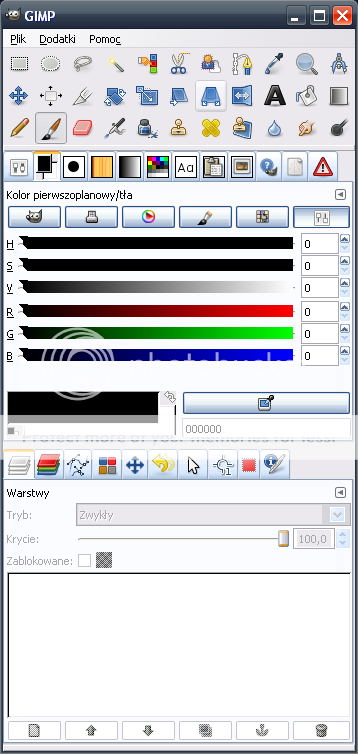 |
Nie przejmój się jeśli twój GIMP wygląda inaczej... Jeśli nie przeszkadza Ci ilość okienek Gimpa jakie będą wyskakiwać to nic nie musisz zmieniać w oryginalnym wyglądzie Gimpa. Ja jednak preferuje jedno okno z narzędziami i jedno okno z obrazkiem jeśli dojdziesz do tego samego wniosku to możesz dodać wszystkie możliwe (lub większość) okienek jakie będą głównie używane a jakie mogą wyskoczyć to wystarczy, że użyjesz tego przycisku:
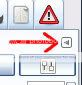
wybierzesz "dodaj zakładkę" i wybierzesz tą którą chcesz dodać... aby zmienić miejsce w którym zakładka się znajduje - lub wyciągnąć z okna po prostu przeciągnij i upuść tam gdzie chcesz mieć tą zakładkę... W trakcie pisania tego tutoriala korzystam z Gimpa w wersji developerskiej 2.3.14 którą można ściągnąć ze strony głównej gimpa. |
<KONIEC ELEMENTÓW DODATKOWYCH>
Nowy obraz
|
aby utworzyć nowy obraz klikamy kolejno menu Plik -> Nowy |
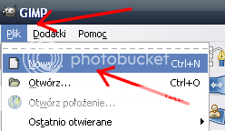 |
|
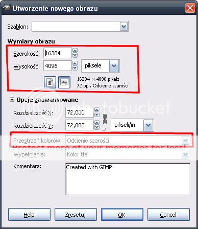 |
W nowym okienku dialogowym ustalamy rozmiar obrazu - szerokość i wysokość. jeśli mapa będzie duża warto zmienić Przestrzeń kolorów na "odcienie szarości" (jeśli utworzymy normalny obraz o rozmiarach 16384x4096 będzie on zajmował w pamięci podręcznej 514 MB a obraz w odcieniach szarości tylko 258 MB jak na obrazku poniżej) |
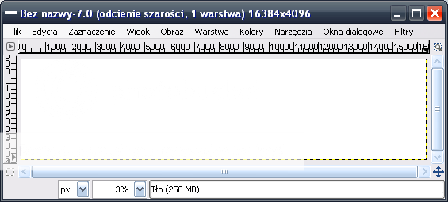
Zasada działania mapy wysokości
Mapa wysokości to tak naprawdę obrazek, w którym odcienie szarości reprezentują wysokość. W mapie wysokości najciemniejsze punkty symbolizują najniższy punkt na mapie. Na powyższym obrazku mamy tylko białe punkty - najwyższy poziom. Rzeczywistą wysokość odpowiadającą najniższemu i najwyższemu punktowi ustalamy na końcu robienia mapy, gdy wszystkie składniki mamy gotowe. Teraz musimy zdecydować czy będziemy rysować "z góry na dół" czy "pod górkę". Jeśli na mapie będzie dużo płaskich terenów o najwyższym poziomie to najlepiej jest zacząć "z góry na dół" lecz jeśli na mapie będzie dominować dola część mapy lepiej jest zacząć "pod górkę" - tak zrobimy w tym tutorialu. Różnica między tymi technikami jest tylko taka że zamiast używać coraz ciemniejszych odcieni szarości (w technice z góry na dół) będziemy zaczynać od ciemnych i im wyższe punkty będziemy rysować tym jaśniejszych odcieni będziemy używać. Oczywiście można także użyć techniki pośredniej, w której zaczynamy od ustalonego odcienia do którego będziemy tylko dorysowywać wysokości wyższe i niższe.
|
Klikamy w oknie z obrazkiem menu Okna dialogowe i wybieramy Kolory |
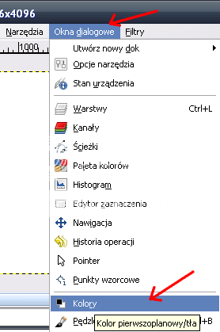 |
|
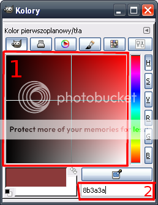 |
i teraz możemy zmienić kolor na co najmniej 2 sposoby :
tymi sposobami zmieniamy kolor pierwszoplanowy na czarny kolor. |
|
teraz wybieramy narzędzie wypełnienia |
|
i klikamy na obrazku |
jeśli nie zmienialiśmy niczego wcześniej to po chwili (jeśli mapa jest duża - dłuższej chwili) to cały obraz powinien wypełnić się czarnym kolorem
Jeśli jednak coś poszło nie tak jak byśmy tego chcieli, cofamy akcję naciskając kombinację klawiszy Ctrl+Z lub z menu edycja wybieramy Cofnij operację : Wypełnienie.
|
Następnie wybieramy menu Okna dialogowe i wybieramy Opcje narzędzia |
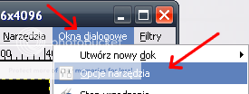 |
Ustawiamy:
Tryb - zwykły, Krycie - 100, Typ wypełnienia - Kolor pierwszoplanowy
oraz Uwzględniony obszar - całe zaznaczenie
jeśli powtórnym wypełnieniu wypełnił się nie cały ekran to, klikamy menu Zaznaczenie i wybieramy żadne/brak powtarzamy powyższe kroki wypełnienia ...
No i mamy podstawÄ™ terenu gotowÄ… ! - to teraz jÄ… zapiszemy ...
Klikamy menu Plik -> Zapisz jako i w oknie dialogowym wskazujemy miejsce zapisu oraz nazwÄ™ razem z rozszerzeniem (najlepiej .bmp jak na obrazku lub natywnie dla gimpa .xcf)
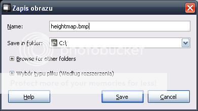
Kontury mapy wysokości
|
pierwszą rzeczą jaką zrobimy będzie wykonanie podstawowych konturów terenu. Aby to zrobić musimy zmienić narzędzie na pędzel |
|
Nasza mapa jest teraz ogromna i standardowe wielkości pędzli dla nas niestety nie wystarczają - dlatego zrobimy własne ...
|
z menu Okna dialogowe wybieramy Pędzle |
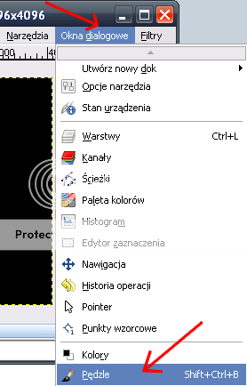 |
jak już napisałem, żaden z początkowo dostępnych pędzli nie będzie dla nas przydatny na początku...
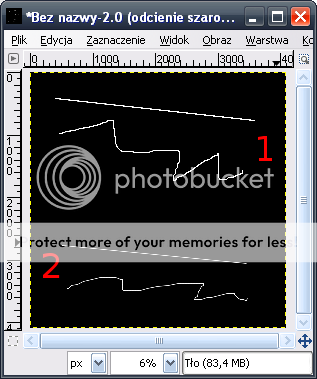 |
1. linie utworzone przez standardowy pędzel 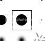
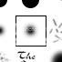 |
|
...dlatego naciskamy (zaznaczony) przycisk aby stworzyć nowy pędzel |
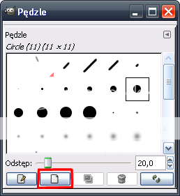 |
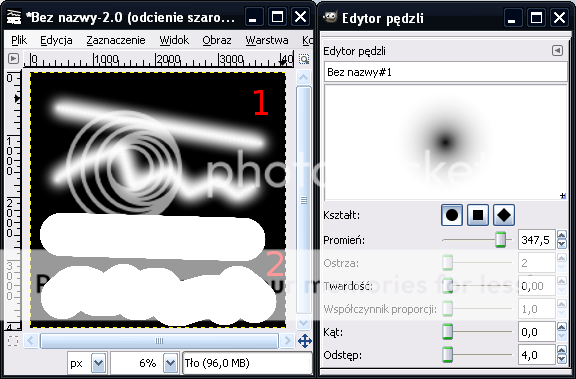
pierwsze dwie linie zostały narysowane przy pomocy pędzla o parametrach pokazanych w oknie Edytora pędzli
kolejne dwie linie to ten sam pędzel z ustawionym parametrem twardości na 1,00.
Linie te demonstrują również maksymalny promień działania pędzla, miejsca w których następuje zmiana koloru.
Powyższa zmiana koloru następuje w obu przypadkach na takim samym promieniu lecz w pierwszym wcale nie jest tak dobrze widoczna - ten efekt będziemy wykorzystywać przy malowaniu łagodnych stoków na naturalnie wyglądających mapach.
zanim jednak zaczniemy malować naszym nowym pędzlem musisz zastanowić się ile głównych poziomów wysokości będzie na Twojej mapie.
|
poziomy wysokości mapy ustala się poprzez odpowiednie dobieranie koloru pędzla w oknie dialogowym Kolory (tym samym które widzieliśmy już wcześniej) |
|
|
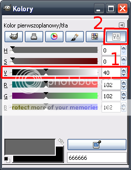 |
istnieje kilka możliwości dobierania koloru, jednak najbardziej przydatne przy rysowaniu mapy wysokości będzie ręczne wybieranie koloru z podziałki lub wpisania jej wartości z przedziału 0-100 ze skali oznaczonej jako 1, dostępnej po naciśnięciu przycisku skala oznaczonego jako 2. |
Przy założeniu, że na Twojej mapie będzie 4 poziomy ułożone w odpowiednio takich samych odległościach od siebie powinieneś malować je kolejno odcieniami szarości o wartościach 0, 33, 67 i 100 umieszczonych w polu przy skali szarości (patrz rys. wyżej, zaznaczenie 1.)
Skoro już masz pomysł na mape ustaliłeś/aś ilość poziomów wysokości ... to zabieramy się za kształtowanie terenu ;)
Najpierw w największym oddaleniu ustalamy najbardziej widoczne kontury terenu pędzlem który wybraliśmy (najprawdopodobniej ten który utworzyliśmy wcześniej).
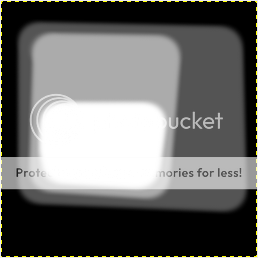
Szczegóły mapy wysokości
Skoro mamy ogół gotowy to teraz wchodzimy w szczegóły
tworzymy nowy pędzel podobnie jak poprzednio (lepiej jest zachować poprzedni - może się jeszcze przydać do poprawek). Pędzel ten powinien być mniejszy od poprzedniego - o ile to zależy od Ciebie...
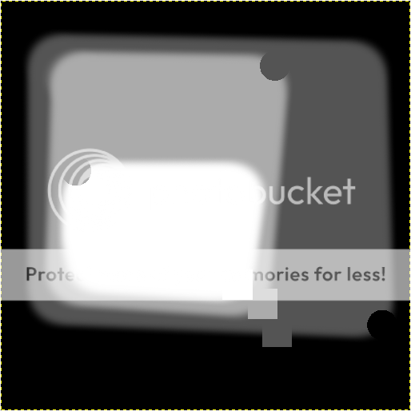
|
elementy odróżniające dwa poprzednie obrazki zostały wykonane dwoma mniejszymi pędzlami ale nie zostały namalowane lecz narysowane narzędziem ołówek |
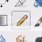 |
aby wykonać bardziej pochyłe nachylenia terenu wystarczy zastosować pędzel o większym stopniu twardości
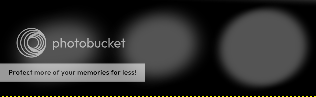
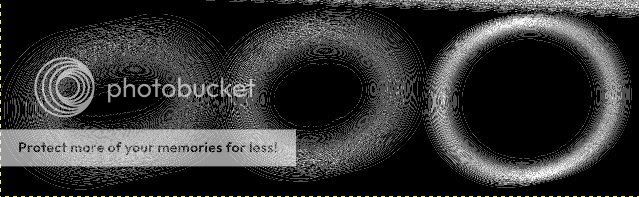
oba powyższe obrazy przedstawiają te same wzniesienia na mapie wysokości wykonane tym samym pędzlem z tą różnicą że pierwsze dwa z lewej zostały namalowane przy twardości = 0, dwa środkowe przy twardości 0,40 a dwa po prawej przy twardości 0,80. Obrazek dolny to jest ta sama mapa wysokości poddana filtrowi wykrywania krawędzi - dla uwidocznienia różnicy między wzniesieniami.
Podjazdy pod wzniesienie można wykonać najłatwiej narzędziem Rozsmarowywanie
powyższy efekt został uzyskany przez użycie pędzla o promieniu 83 i odstępie równym kolejno 6, 4, 2, oraz przy tempie równym 98,7. Pierwszy z podjazdów został on uzyskany przez kliknięcie w punkcie 1 i przez ponowne kliknięcie w punkcie 2 (zanim jednak kliknąłem drugi raz nacisnąłem i przytrzymałem wciśnięty na klawiaturze Shift)
poniższy efekt został uzyskany przez wielokrotne przeciąganie "palca" bez używania klawisza Shift, ponadto rozmazywanie było rozpoczynane za każdym razem w środku wzniesienia (z wyjątkiem poprawek) i przebiegało dwuetapowo - rozmazywanie w kierunku koloru ciemniejszego a później w kierunku jaśniejszego.
W trakcie tworzenia mapy wysokości może przydać się także narzędzie Zaznaczenie, jednak zależne jest od metody i sytuacji. Pozostawiam Tobie do sprawdzenia do czego może przydać się to narzędzie.
Czasem przydatne może być także narzędzie Gradient ale daje ono sztuczne efekty, które nie pasują do realistycznych map natury.
aby dopracować mapę wysokości w drobnych szczegółach należy zmniejszyć średnicę pędzla jeszcze bardziej (lub nawet użyć standardowych) i użyć technik przedstawionych powyżej
W trakcie rysowania mapy wysokości może przydać się filtr Wykrywanie krawędzi dostępne z menu Filtry -> Wykrywanie krawędzi -> Krawędź. Wybierając tą opcję pojawia się okno w którym można wybrać algorytm (w tym tutorialu użyty był Sobel o mocy równej 400). Najprzydatniejszą funkcją jest podgląd, który można odświeżać poprzez dwukrotne kliknięcie Podgląd. Przydatne jest wtedy kiedy zmieni się wielkość okna podglądu i zamiast wyłączać, będziemy go używać jako podglądu wybranego fragmentu obrazu w trakcie edycji.
I jeszcze jedna bardzo ważna rzecz - często zapisuj efekty pracy na dysku aby uniknąć ewentualnego powtórnego malowania tych samych elementów.
Oto efekt pracy w gimpie przy bardzo podstawowym wykorzystaniu przedstawionych powyżej technik malowania mapy wysokości
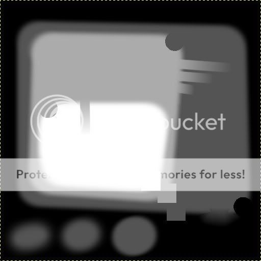
Mapa metalu
jak napisałem na wstępie dużo od niej zależy, ale zdecydowanie łatwiej ją wykonać niż mapę wysokości.
Otwieramy poprzednio zapisaną mapę wysokości (wcześniej jednak dobrze jest zrobić jej kopię zapasową, aby uniknąć niemiłych niespodzianek).
Pierwszą rzeczą od jakiej powinniśmy zacząć będzie zmiana rozmiaru obrazu.
wchodzimy w menu Obraz i wybieramy Skaluj
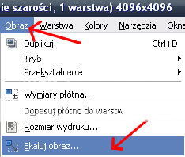
|
następnie wybieramy rozdzielczość na jaką ma być obraz przeskalowany (1/8 + 1 pixel w każdym wymiarze względem mapy wysokości jaką do tej pory utworzyliśmy) ponadto ustalamy Interpolację na sześcienną dla najlepszych efektów. |
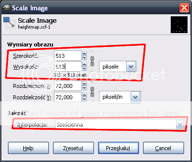 |
Mając taką pomniejszoną mapę wysokości wybieramy menu Okna dialogowe, a z niego Warstwy
z poniższego okna naciskamy zaznaczony przycisk
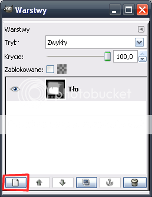
następnie z okna dialogowego Nowa warstwa wybieramy typ wypełnienia jako Przezroczysta
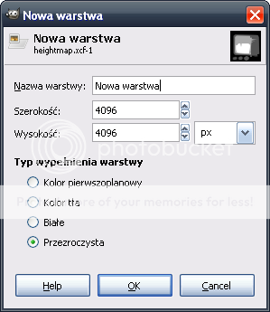
nowo utworzona warstwa powinna mieć te same rozmiary co pomniejszona mapa wysokości, oraz powinna być wybrana automatycznie do edycji (o czym świadczy niebieskie podświetlenie gdy okno jest aktywne oraz szare gdy nie jest aktywne)
|
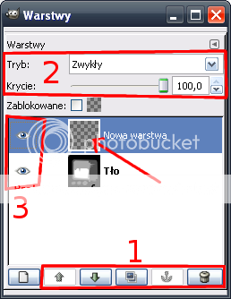 |
Pole oznaczone jako 1 zawiera przyciski do zarządzania warstwami. zakotwiczenie aktywne jest wtedy gdy wklejamy jakiś element - powoduje jego przyklejenie do warstwy bezpośrednio pod nim. Oczy oznaczone jako 3 świadczą o tym że w danym momencie dana warstwa jest widoczna. Strzałką oznaczony jest "kolor" przezroczystości. |
Skoro mamy już nową warstwę to wypełniamy ją kolorem czarnym (czarny na mapie metalu oznacza 0 metalu na sekundę ...)
Aby ułatwić sobie życie wracamy do okna Warstwy i suwakiem oznaczonym jako 2 na powyższym rysunku ustalamy poziom widoczności na 50%.
Teraz na naszej półprzezroczystej warstwie metalu kolorem białym (białym a nie jakimś jego odcieniem) - cały czas dla oszczędności pamięci robimy to w odcieniach szarości - zaznaczamy metal przy pomocy pędzla lub ołówka.
|
teraz majÄ…c caÅ‚y metal zaznaczony usuwamy warstwÄ™ pod mapÄ… metalu klikajÄ…c na niÄ… ("TÅ‚o"), a nastÄ™pnie na przycisk kosza oznaczony na rysunku w sekcji 1. (POD WARUNKIEM Å»E ZAPISAÃ…ÂEÃ…Å¡/AÃ…Å¡ JÄ„ JUÅ» WCZEÃ…Å¡NIEJ) |
|
teraz gdy mamy już tylko jedną warstwę, przywracamy Krycie na 100,
tak przeskalowaną mapę metalu możemy przekonwertować na normalne kolory RGB z odcieni szarości.
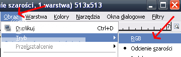
następnym krokiem będzie dodanie dodanie kolejnej przezroczystej warstwy, ustalenie jej pod naszą mapą metalu i wypełnienie czerwonym kolorem (ale czerwonym a nie jakimś odcieniem czerwieni). Czerwony o nasyceniu 255 (100%, 0% innych barw) daje maksymalną ilość metalu. Im ciemniejszy odcień czerwieni tym mniej metalu - dlatego warto zacząć od maksymalnej jego wartości.
Teraz gdy mamy czerwoną warstwę pod naszą czarno białą mapą metalu wybieramy do edycji (zaznaczamy) mapę metalu i zmieniamy Tryb na Mnożenie
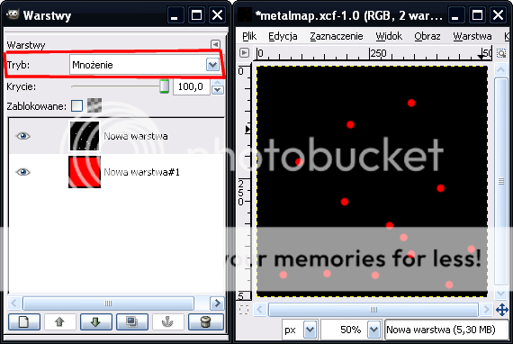
teraz wchodzimy w menu Obraz i wybieramy PoÅ‚Ä…cz widoczne warstwy i w oknie które siÄ™ pojawi klikamy Ã…ÂÄ…czenie
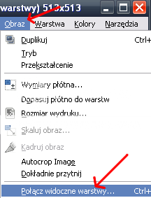
ostatnim krokiem będzie zapisanie naszej mapy metalu - tą umiejętność już powinieneś/aś posiadać :)...
Mapa "ozdób terenu"
Zanim zaczniemy robić mapę ozdób terenu musimy odpowiedzieć na zasadnicze pytanie:
Czy na naszej mapie będą jakieś ozdoby terenu typu drzewa, otwory geotermiczne, kamienie, trawa, szczątki pojazdów, itp ...
Jeśli NIE to jedyne co musimy zrobić to otworzyć nowy obraz o wymiarach 1/8 szerokości oraz wysokości naszej mapy wysokości terenu, wypełnić ją czarnym (0% zieleni, czerwieni, niebieskiego) kolorem i zapisać jako mapę ozdób terenu.
Jeśli TAK to:
Otwieramy naszą mapę wysokości i "skalujemy ją" do rozmiaru 1/8 w szerokości i wysokości (dla naszej mapy wysokości o rozmiarach 4096x4096 będzie to 512x512). Wykonamy mapę ozdób terenu bardzo podobnie do mapy metalu.
Mając już tak zeskalowaną mapę terenu dodajemy nowe przezroczyste warstwy:
1 nową warstwę, którą przeznaczymy na zalesienie mapy i otwory geotermiczne (będziemy na niej rysować na zielono);
1 nową warstwę, którą przeznaczymy na trawę (będziemy na niej rysować na niebiesko);
1 nową warstwę, którą przeznaczymy na wszystkie inne elementy krajobrazu (będziemy na niej rysować na czerwono);
1 nową warstwę, która posłuży za podłoże i zostanie na końcu wypełniona czarnym kolorem.
...a to oznacza, że dodajemy co najmniej dwie warstwy. Dlaczego aż tyle ?
Dlatego, że jeśli będziemy chcieli przykładowo postawić otwór geotermiczny w tym samym miejscu, w którym rośnie trawa to łatwiej będzie to zrobić przez warstwy niż kombinować z kolorami połączonymi składającymi się z odcieni niebieskiego i zielonym kolorem na jednej warstwie.
Zmieniamy teraz tryb z odcieni szarości na RGB.
Teraz przystępujemy do robienia właściwej mapy ozdób terenu:
|
zaznaczamy pierwszą z nowo utworzonych warstw (najlepiej tą, która jest najwyżej), wybieramy narzędzie Ołówek |
|
|
i z okna dialogowego Pędzle wybieramy standardowy pędzel pixel (1x1 square) (1x1) lub Circle 01 (1x1). |
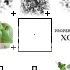 |
Mając wybrane właściwe narzędzie przechodzimy do okna dialogowego Kolory i przechodzimy na ostatnią "zakładkę" skale aby dobrać właściwy kolor.
Teraz zależnie od tego co chcemy umieścić na mapie terenu wybieramy kolor zielony, czerwony lub niebieski:
(niebieskie strzałki wskazują na to co ma pozostać równe 0)
|
- jeśli jest to kolor zielony o nasyceniu 100% (zielony o nasyceniu 255) to znaczy, że "chcesz" umieścić na mapie trochę otworów geotermicznych :) |
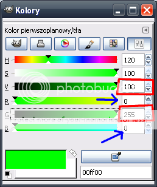 |
|
- jeśli jest to kolor zielony o nasyceniu od 200 do 215 to znaczy, że "chcesz" umieścić na mapie trochę drzew. |
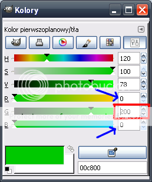 |
|
- jeśli jest to kolor niebieski o dowolnym nasyceniu (0 - 255) to znaczy, że "chcesz" umieścić na mapie trawę w ilości odpowiadającej nasyceniu (bez trawy - dużo trawy) |
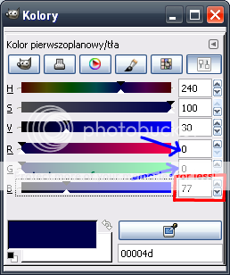 |
|
- jeśli jest to kolor czerwony o nasyceniu od 255 w dół to znaczy, że "chcesz" umieścić na mapie trochę innych elementów krajobrazu, które są (lub będą) wymienione kolejno w pliku "FS.txt", który znajduje się w paczce z MapConv'em. Ale o tym później. |
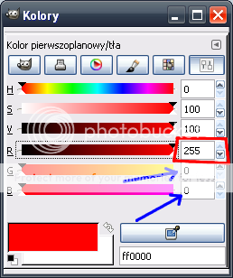 |
Skoro kolor mamy wybrany, to teraz malujemy na naszych warstwach (po jednym kolorze na warstwę) to co chcemy aby było na gotowej mapie, ale pamiętaj, że...
...Ważne jest aby piksele tych elementów nie znajdowały się za blisko siebie - tzn nie bliżej niż 4-5 pikseli (z wyjątkiem trawy). Jest tak dlatego, że kompilacja tak utworzonych plików MapConv'em może dawać dziwne efekty w grze, zawiesić samego MapConv'a w trakcie kompilacji ... albo wręcz zwiesić grę w trakcie grania.
skoro mamy już wszystkie elementy mapy ozdób terenu ustawione to teraz usuwamy warstwę z pomniejszoną mapą wysokości, warstwę, która pozostała przezroczysta przesuwamy strzałkami w oknie warstw na sam dół (wypełniamy na czarno) i z menu Obraz wybieramy Spłaszcz obraz.
W ten sposób powstaje nam mapa ozdób terenu.
Nie zapomnij jej zapisać...
Mapa rodzaju terenu
Ten element mapy ma wpływ tylko na jednostki nielatające. To znaczy, że ma wpływ na statki, poduszkowce, roboty i czołgi.
Zasada działania mapy rodzaju terenu polega na tym, że można sztucznie poprawić, utrudnić lub uniemożliwić przemieszczanie się przez dane miejsce na mapie każdemu rodzajowi pojazdów oprócz latających.
Zaczynamy od otwarcia naszej mapy wysokości i skalujemy ją do 1/16 rozmiaru początkowego w każdym wymiarze (czyli z mapy wysokości którą zrobiliśmy w rozmiarze tekstury mapy).
MajÄ…c tak przeskalowanÄ… zmieniamy w menu Obraz -> Tryb na RGB.
Następnie dodajemy nową przezroczystą warstwę.
Teraz musimy się zastanowić ile tak naprawdę ma być rodzajów terenu na naszej mapie. Musimy wziąć pod uwagę, że mapa rodzaju ternu jest bardzo mała i nie opłaca się robić faz przejściowych między rodzajami pod warunkiem że będą one szerokie. Maksymalnie możemy mieć 255 różnych rodzajów terenu ponieważ mamy do dyspozycji tylko czerwone kolory z zakresu 0-255.
Przykładowo na mapie NarrowValleyR1 użyłem tylko 2 rodzajów terenu w podobnych proporcjach.
Wracamy do malowania rodzajów terenu:
Załóżmy, że na naszej mapie będzie dominował jeden rodzaj terenu a inny będzie tylko dodatkiem - który jednak będzie miał istotne znaczenie dla rozgrywki.
DominujÄ…cy rodzaj terenu zostawiamy na koniec, a zajmiemy siÄ™ tylko tym "dodatkiem".
Zaznaczamy nową warstwę, wybieramy narzędzie Ołówek
|
i wybieramy odcień czerwieni jaką będziemy oznaczać nasz "specjalny" rodzaj terenu, na przykład 100% czerwieni czyli czerwony o nasyceniu 255 |
|
... i zaznaczamy na naszej mapie teren, na którym ma być ten specjalny teren
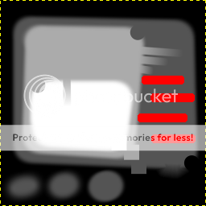
|
przy założeniu, że mamy jeden typ terenu zaznaczony a drugi będzie zajmował całą resztę wybieramy narzędzie Wypełnienia |
|
teraz mając wybrane narzędzie wypełnienia upewniamy się, że krycie jest ustawione na 100, tryb zwykły, typ wypełnienia kolor pierwszoplanowy, Uwzględniony obszar podobne kolory.
Następnie wybieramy kolor dla drugiego typu terenu, na przykład czerwień o nasyceniu 1 (z 255).
Gdy wszystkie parametry są ustawione klikamy na obrazku na przestrzeni przezroczystej (czyli nie nasz zaznaczony wcześniej czerwony kolor pierwszego typu terenu)
ostatnią rzeczą jest jak zwykle upewnienie się, że owoce naszej pracy są zapisane na dysku... :)
Pierwsze testy naszej mapy
W tym momencie mamy już wystarczająco dużo abyśmy mogli już naszą mapę wstępnie przetestować.
Teoretycznie można było to zrobić już w momencie gdy zrobiliśmy samą mapę wysokości lecz jeśli nie dysponujesz zbyt mocnym komputerem to proces kompilacji mapy może po prostu długo potrwać, a nie wydaje się mało prawdopodobne, że na takim komputerze chętnie będziemy kompilować tą mapę za każdym razem przy każdej poprawce...
Zrobienie pozostałych elementów (z wyjątkiem tekstury) tak naprawdę może trwać mniej niż zrobienie samej mapy wysokości. Co więcej jeśli zostaną wykonane prawidłowo - może okazać się, że nie będziemy wprowadzać żadnych poprawek a to może znacznie skrócić czas potrzebny na wykonanie mapy.
Dlatego dopiero teraz opiszę jak należy mapę skompilować.
Zanim skompilujemy mapÄ™
Na tym etapie powinniśmy posiadać gotowe pliki mapy wysokości, mapy metalu, mapy ozdób terenu, oraz mapę rodzaju terenu.
Dobrze będzie dla przyspieszenia kompilacji mapy zapisać te obrazy w postaci plików BMP na przykład tak jak na poniższym rysunku. Oczywiście MapConv zaakceptuje pliki graficzne w innych formatach takich jak JPEG czy PNG lecz robienie mapy z takich plików po prostu dłużej potrwa.
zakładam że już pobrałeś MapConv'a, jeśli nie to pobieramy go stąd
Paczkę zip z MapConv'em musimy rozpakować na dysk twardy. Dobrze jest rozpakować go od razu do miejsca, w którym będą umieszczone nasze obrazy elementów terenu.
<ELEMENTY DODATKOWE>
Jeśli nie wiesz jak rozpakować tą paczkę po prostu naciśnij ją prawym przyciskiem myszy, wybierz Otwórz za pomocą i dalej Foldery skompresowane (zip). Pojawi się okno z Zadań folderów wybieramy Wyodrębnij wszystkie pliki. Pojawi się nowe okno w którym klikamy dalej, wybieramy miejsce w którym pliki zostaną wypakowane (domyślna ścieżka powinna wskazywać właściwy folder więc...) klikamy dalej a gdy pliki się wypakują (wyodrębnią) naciskamy Zakończ.
<KONIEC ELEMENTÓW DODATKOWYCH>
Otwieramy folder z wypakowanym MapConv'em i przenosimy do niego nasze pliki:
- mapę wysokości w pliku BMP
- mapÄ™ metalu w pliku BMP
- mapę ozdób terenu w pliku BMP
- mapÄ™ rodzaju terenu w pliku BMP
Nasza testowa mapa nie może pozostać bez mapy wysokości.
Na tym etapie nasza mapa wysokości jaką do tej pory wykonywaliśmy tak naprawdę posłuży do testowania jako tekstura mapy.
Dlatego z mapy wysokości jaką zrobiliśmy na początku musimy zrobić mapę wysokości akceptowalną przez MapConva.
Otwieramy naszą mapę wysokości zapisaną w pliku BMP. Następnie skalujemy ją do wymiarów 1/8 + 1 piksel w szerokości i wysokości (z włączoną interpolacją sześcienną). Dla tekstury wymiarach 4096x4096 mapa wysokości powinna mieć wymiary 513x513
Tak powstałą mapę wysokości zapisujemy jako właściwą mapę wysokości od razu do pliku BMP.
Kompilujemy mapÄ™
W tym momencie nasz folder z MapConv'em powinien składać się z następujących plików:
- "Compile_My_Map.bat"
- "fs.txt"
- "geovent.bmp"
- "Grout_2.exe"
- "MapConv.cpp"
- "MapConv.exe"
- "nvdxt.exe"
- "SMFED.exe"
- "spring.exe"
- "Water Height.exe"
- "MAPA_WYSOKOSCI.bmp"
- "MAPA_METALU.bmp"
- "MAPA_OZDOB_TERENU.bmp"
- "MAPA_RODZAJU_TERENU.bmp"
- "WLASCIWA_MAPA_WYSOKOSCI.bmp"
Na wszelki wypadek powinniśmy unikać używania polskich znaków językowych typu ó,ł,ę w nazwach plików mapy gdyż może to być przyczyną powstawania błędów kompilacji mapy. Ponadto ważne jest aby pliki te umieszczone były bezpośrednio w folderze, w którym mamy rozpakowanego MapConv'a. WAŻNE JEST TAKŻE aby folder w którym znajduje się MapConv (ani żaden z folderów nadrzędnych) nie zawierał żadnej spacji (pustego znaku " ") w nazwie. Jeśli będą spacje w nazwie, kompilacja mapy zakończy się niepowodzeniem.
więc przechodzimy do kompilowania mapy...
Otwieramy wiersz polecenia (START [ten w lewym dolnym rogu ekranu] -> Uruchom -> wpisujemy cmd i naciskamy OK)
Pojawia się okno z czarnym tłem na którym ostatnia wyświetlona linijka powinna wyglądać w taki sposób :
C:\Documents and Settings\NAZWA_UZYTKOWNIKA>
...i na końcu będzie migał poziomy kursor.
Zakładam że nie umieściłeś MapConv'a w tym folderze więc musimy do niego przejść:
- aby przejść jeden folder wyżej do folderu nadrzÄ™dnego wystarczy, że wpiszemy "cd.." i naciÅ›niemy na klawiaturze ENTER (klawisz oznaczony na klawiaturze jako â—„ââ€â‚¬Ã¢â€Ëœ)
- aby zmienić dysk na którym chcemy pracować po prostu wpisujemy "D:"
- aby przejść do folderu podrzędnego (do tego w którym jesteśmy obecnie) wpisujemy "cd NAZWA_FOLDERU"
Powyższe czynności powinny wyglądać na przykład w następujący sposób:
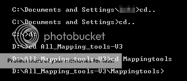
W tym momencie jesteśmy w folderze z MapConvem więc teraz wpiszemy polecenie kompilujące mapę:
mapconv -c 0.5 -x 500 -n -50 -o KONCOWA_NAZWA_MAPY.smf -t TEKSTURA_MAPY.bmp -m MAPA_METALU.bmp -a MAPA_WYSOKOSCI.bmp -f MAPA_OZDOB_TERENU.bmp -y MAPA_RODZAJU_TERENU.bmp -i
takie oto polecenie spowoduje włączenie procesu kompilowania mapy (które może potrwać w zależności od tego jaki masz sprzęt oraz w zależności od stopnia skomplikowania obrazków).
DZIAÃ…ÂANIE POWYÅ»SZEGO POLECENIA
mapconv - inicjuje sam program
-c 0.5 - włącza kompresję pliku wynikowego za pomocą parametru 0.5 - bezpieczną wartość która znajdzie zastosowanie we wszystkich mapach lecz aby znaleźć właściwy parametr dla danej mapy należało by użyć metody prób i błędów
-x 500 - rzeczywista wartość maksymalnej wysokości jaką będzie mieć mapa w najwyższym punkcie (odpowiadającym kolorowi białemu na mapie wysokości)
-n -50 - rzeczywista wartość minimalnej wysokości jaką będzie mieć mapa w najniższym punkcie (odpowiadającym kolorowi czarnemu na mapie wysokości), wartości ujemne oznaczają poziom poniżej poziomu morza - teren taki będzie w grze pokryty wodą
-o KONCOWA_NAZWA_MAPY.smf - nazwa pliku wynikowego kompilacji - nie może być zmieniona po kompilacji - w przeciwnym wypadku mapa nie będzie działać prawidłowo.
-t TEKSTURA_MAPY.bmp - wskazujemy tu nazwÄ™ pliku znajdujÄ…cego siÄ™ w tym samym folderze jako tekstura naszej mapy
-m MAPA_METALU.bmp - wskazujemy tu nazwÄ™ pliku znajdujÄ…cego siÄ™ w tym samym folderze jako mapa metalu dla naszej mapy
-a MAPA_WYSOKOSCI.bmp - wskazujemy tu nazwę pliku znajdującego się w tym samym folderze jako mapa wysokości naszej mapy
-f MAPA_OZDOB_TERENU.bmp - wskazujemy tu nazwę pliku znajdującego się w tym samym folderze jako mapa ozdób terenu naszej mapy
-y MAPA_RODZAJU_TERENU.bmp - wskazujemy tu nazwÄ™ pliku znajdujÄ…cego siÄ™ w tym samym folderze jako mapa rodzaju terenu naszej mapy
-i - parametr niekonieczny jeżeli nasza mapa wysokości jest odwrócona co do wartości (tzn jeśli biały kolor symbolizuje najniższy punkt terenu, a nie najwyższy jak to opisywałem wyżej)
w wyniku działania MapConv'a wywołanego takim poleceniem powstaną 2 pliki:
- KONCOWA_NAZWA_MAPY.smf - KONCOWA_NAZWA_MAPY.smt
OBA te pliki są potrzebne aby nasza mapa działała prawidłowo.
Plik z opisem mapy i parametrami
po kompilacji brakuje nam jeszcze tylko jednego pliku aby nasza mapa działała.
Aby ułatwić sobie wstępne testowanie po prostu pożyczymy plik z już istniejącej mapy.
Mapą tą będzie standardowa mapa SmallDivide.sd7 znajdująca się w folderze z mapami wewnątrz folderu Spring'a.
Tu pomocny będzie program 7zip, który ściągnęliśmy na początku. Zakładam, że masz już ten program zainstalowany więc wchodzimy do folderu maps wewnątrz foldery z grą i szukamy mapy SmallDivide.sd7.
Gdy już go odnajdujemy naciskamy go prawym przyciskiem myszy i z menu wybieramy 7-zip a z podmenu Otwórz archiwum.
Pojawia nam siÄ™ okno 7zip'a a w nim widzimy folder maps. Wchodzimy w niego i widzimy 3 pliki :
- SmallDivide.smd
- SmallDivide.smf
- SmallDivide.smt
W tym momencie przeciÄ…gamy plik SmallDivide.smd do folderu z plikami SMT i SMF naszej mapy. Spowoduje to jego wypakowanie.
Teraz musimy tylko zmienić jego nazwę na KONCOWA_NAZWA_MAPY.smd - do testów wystarczy nam jego niezmieniona wersja.
Zasada działania pliku SMD
Jeśli jednak chcesz od razu dopasować paramety mapy to otwieramy plik KONCOWA_NAZWA_MAPY.smd (poprostu naciśnij go prawym przyciskiem myszy, z menu wybierz opcję Otwórz z i wybieramy Notatnik)
Po otwarciu tego pliku powinniśmy widzieć coś podobnego do poniższego przykładu:
[MAP]
{
Description=Opis;
TidalStrength=10;
Gravity=120;
MaxMetal=1.2;
ExtractorRadius=100;
MapHardness=100;
DetailTex=mydetailtex.bmp;
AutoShowMetal=1;
[ATMOSPHERE]
{
Skybox=mojeteksturynieba.dds;
FogStart=0.2;
FogColor=0.7 0.7 0.8;
SkyColor=0.1 0.15 0.7;
SunColor=1.0 1.0 1.0;
CloudColor=0.9 0.9 0.9;
CloudDensity=0.55;
MinWind=1;
MaxWind=25;
}
[WATER]
{
WaterTexture=mojateksturawody.jpg;
WaterSurfaceColor=0.4 0.6 0.8;
WaterPlaneColor=0.4 0.6 0.8;
WaterBaseColor=0.4 0.6 0.8;
WaterAbsorb=0.004 0.004 0.002;
WaterMinColor=0.1 0.1 0.3;
WaterDamage=20;
}
[LIGHT]
{
SunDir=0 1 2;
GroundAmbientColor=0.4 0.4 0.4;
GroundSunColor=0.7 0.7 0.7;
GroundShadowDensity=0.8;
UnitAmbientColor=0.3 0.3 0.3;
UnitSunColor=0.8 0.8 0.8;
UnitShadowDensity=0.8;
SpecularSunColor=0.3 0.3 0.3;
}
[TERRAINTYPEXXX]
{
name=Nazwa_typu_terenu;
hardness=2;
tankmovespeed=0.9;
kbotmovespeed=1;
hovermovespeed=1;
shipmovespeed=0;
}
[TEAM0]
{
StartPosX=250;
StartPosZ=250;
}
[TEAM1]
{
StartPosX=4950;
StartPosZ=4950;
}
}
A teraz ta sama zawartość pliku SMD z opisem (pogrubiony tekst):
[MAP]
Każdy plik SMD powinien zaczynać się od tej sekcji głównej a w niej jest każda wewnętrzna.
{
obowiązkowy znacznik otwierający sekcję główną oraz sekcje wewnętrzne, zamykany przy pomocy "}".
Description=Opis;
Jest to krótki opis mapy jaki będzie widoczny w lobby po wybraniu mapy.
TidalStrength=10;
Ilość energii jaką będą dawać elektrownie wodne. Bezpieczne wartości to od 10-30.
Gravity=120;
Siła grawitacji, standardem jest 120-150. Njabardziej widoczny wpływ niskiej grawitacji jest przy ostrzale artyleryjskim gdyż wtedy każdy strzał poprostu leci wyżej i dłużej leci zanim trafi cel.
MaxMetal=1.2;
Poziom wydobycia metalu. Wartości poniżej 1 są bardziej w stylu OTA, powyżej 1 jest bardziej w stylu XTA.
ExtractorRadius=100;
promień w jakim ekstraktor wydobywa metal, wartości 40-50 dają mały promień, wartość 100 uznawana jest za standardową.
MapHardness=100;
Twardość terenu - od niej zależy w jakim stopniu teren będzie się deformował przy uderzeniu.
DetailTex=mydetailtex.bmp;
Wskazuje oddzielny obrazek (który musi być umieszczony w folderze maps). Obrazek ten stanie się widoczny przy zdobieniu dużego zbliżenia terenu (po to aby tekstura terenu nie wyglądała aż tak beznadziejnie przy dużym zbliżeniu).
AutoShowMetal=1;
Powoduje automatyczne przełaczenie widoku na widok metalu przy próbie postawienia ekstraktora metalu na mapie.
[ATMOSPHERE]
Sekcja atmosfery mapy.
{
Skybox=mojeteksturynieba.dds;
Wskazuje na oddzielny obrazek (zestaw obrazków w pliku DDS), który będzie widoczny jako niebo.
FogStart=0.2;
Odległość na której zacznie być widoczna powyższa mgła.
FogColor=0.7 0.7 0.8;
Kolor mgły. Parametr ten składa się z 3 wartości symbolizujących natężenie kolorów składowych (czerwonego zielonego i niebieskiego), wartości od 0.0 do 1.0, jednakże wartości mniejsze niż 0.0 spowodują obniżenie jasności koloru, a wartości powyżej 1.0 spwodują podwyższenie jasności koloru.
SkyColor=0.1 0.15 0.7;
Kolor nieba. Parametry podobnie jak wyżej.
SunColor=1.0 1.0 1.0;
Kolor światła słonecznego. Parametry podobnie jak wyżej.
CloudColor=0.9 0.9 0.9;
Kolor chmór jakie będą na niebie. Parametry podobnie jak wyżej.
CloudDensity=0.55;
Procentowe zachmórzenie, wartości od 0.0 do 1.0.
MinWind=1;
minimalna wartośc energii uzyskiwana przez elektrownie wiatrową.
MaxWind=25;
maksymalna wartośc energii uzyskiwana przez elektrownie wiatrową.
}
[WATER]
Sekcja wody na mapie.
{
WaterTexture=mojateksturawody.jpg;
Wskazuje na oddzielny obrazek, który będzie widoczny jako tekstura wody.
WaterSurfaceColor=0.4 0.6 0.8;
Kolor powieżchni wody widoczny gdy wyłaczone są refleksy wody w opcjach gry.
WaterPlaneColor=0.4 0.6 0.8;
Kolor wody "poza mapÄ…".
WaterBaseColor=0.4 0.6 0.8;
Kolor wody na powieżchni (prawdopodobnie stosowany w innych przypadkach niż WaterSurfaceColor - do sprawdzenia doświadczalnie).
WaterAbsorb=0.004 0.004 0.002;
Stopień w jakim woda będzie "pochłaniać kolor" (światło) wraz ze zwiększającą się głębokością.
WaterMinColor=0.1 0.1 0.3;
Kolor do jakiego maksymalnie można zejśc przez parametr WaterAbsorb).
WaterDamage=20;
Parametr ten powoduje uszkadzanie jednostki która wejdzie w wodę. Stosowany w mapach z lawą zamiast wody. Warośc 20 spowoduje uszkadzanie pojazdu o 20 punktów wytrzymałości na 30 klatek gry (około 21 punktów wytrzymałości na 1 sekunde przy grze bez "laga").
}
[LIGHT]
Sekcja oświetlenia mapy.
{
SunDir=0 1 2;
Kierunek w jakim powstanie cień - przeciwny do kierunku słońca, współżędne X Y Z.
GroundAmbientColor=0.4 0.4 0.4;
Oświetlenie obiektów na mapie od strony zacienionej.
GroundSunColor=0.7 0.7 0.7;
Oświetlenie obiektów na mapie od strony oświetlonej przez słońce.
GroundShadowDensity=0.8;
"Ciemność" cienia powstałego "za" elementami terenu.
UnitAmbientColor=0.3 0.3 0.3;
Oświrtlenie jednostek graczy od strony zacienionej.
UnitSunColor=0.8 0.8 0.8;
Oświetlenie jednostek graczy od strony oświetlonej przez słońce.
UnitShadowDensity=0.8;
"Ciemność" cienia powstałego "za" jednostakmi graczy.
SpecularSunColor=0.3 0.3 0.3;
Kolor odbitych promieni słonecznych.
}
[TERRAINTYPEXXX]
sekcja typu terenu odpowiadająca kolorowi czerwonemu o wartości XXX na naszej mapie typu terenu. Każdy kolor z mapy typuy terenu (włącznie z czarnym) powinien być opisany w ten sposób - inaczej zostaną zastosowane wartości domyślne. Dla każdego koloru mapy typu terenu powinna być oddzielna sekcja [TERRAINTYPEXXX]
{
name=Nazwa_typu_terenu;
jedno słowo nazwy jakie się będzie pojawiać po najechaniu na dany typ terenu.
hardness=2;
mnożnik względem parametru MapHardness. wartośc 2 oznacza 2 * MapHardness.
tankmovespeed=0.9;
parametr prędkości czołgów (pojazdów kołowych) na tym typie terenu). Wartośc 0.9 oznacza, że pojazdy mieszczące się w tej kategorii będą poruszać się z 90% prędkości normalnego terenu a tym terenie.
kbotmovespeed=1;
podobnie jak wyżej tyle, że dla pojazdów mieszczących się w kategorii robotów chodzących.
hovermovespeed=1;
podobnie jak wyżej tyle, że dla pojazdów mieszczących się w kategorii poduszkowców.
shipmovespeed=0;
podobnie jak wyżej tyle, że dla pojazdów mieszczących się w kategorii statków. Wartośc 0 oznacza że przez ten typ terenu statki nie będą mogły sie przemieszczać w ogóle.
}
// Tu powinny znajdować się sekcje dla innych typów terenu. //
[TEAM0]
sekcja pozycji startowej gracza o numerze 1 (numeracja w pliku SMD zaczyna siÄ™ od 0, a nie jak w grze od 1 !).
{
StartPosX=250;
wartość szerokości na jakiej dany gracz ma pozycję startową, liczona od lewego górnego rogu tekstury
StartPosZ=250;
wartość wysokości na jakiej dany gracz ma pozycję startową, liczona od lewego górnego rogu tekstury
}
[TEAM1]
sekcja pozycji startowej gracza o numerze 2.
{
StartPosX=4950;
StartPosZ=4950;
}
// tu powinny znajdować się sekcje startowe dla innych graczy. //
}
zakończenie sekcji głównej pliku SMD.
Pakujemy naszÄ… mapÄ™ w jeden plik
Aby nasza mapa była prawidłowo rozpoznana przez Spring'a musimy utworzyć nowy folder o nazwie maps (koniecznie o takiej nazwie a nie innej).
Kopiujemy do niego nasze pliki SMD, SMF i SMT.
Następnie naciskamy prawym przyciskiem myszy na nowo utworzony folder maps zawierający nasze pliki smd, smf i smt. Z menu wybieramy 7-zip -> Dodaj do archiwum... . Teraz upewnij się że ustawienia masz takie same jak na rysunku poniżej, pamiętaj jednak że nazwa pliku musi być identyczna jak plików skompilowanych, tyle że rozszerzenie ustalamy ręcznie na sd7.
Jeśli na naszej mapie będą także wykożystywane ozdoby terenu zaznaczane na mapie ozdób kolorem czerwonym to musimy także w tym pliku sd7 umieścić plik fs.txt znajdujący się w folderze MapConv'a oraz foldery zawierające te ozdoby terenu. Plik fs.txt powinien być umieszczony bezpośrednio w pliku sd7, a nie wewnątrz folderu maps umieszczonego wewnątrz pliku sd7.
Do testów, dobrze jest jednak nie używać tych ozdób terenu, a zająć się nimi na końcu (będą opisane na końcu tego tutoriala).
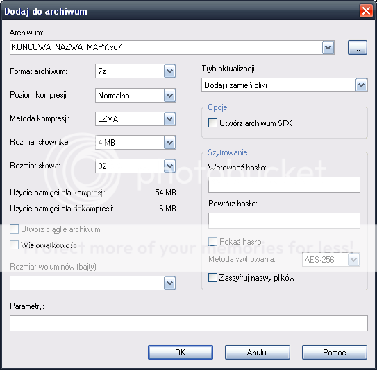
Parametry : Poziom kompresji, Rozmiar słowa i Rozmiar słownika mogą mieć inne wartości i należy je przetestować metodą prób i błędów.
Tak oto spakowaną mapę możemy przenieść do folderu map w folderze Springa i przetestować, chociażby na lobby internetowym samodzielnie.
Nasza mapa w akcji
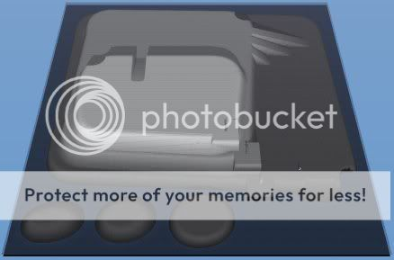
Powyższy obrazek przedstawia wygląd naszej mapy w grze, wygląd całej mapy.
Poniższy obrazek przedstawia otwory geotermiczne
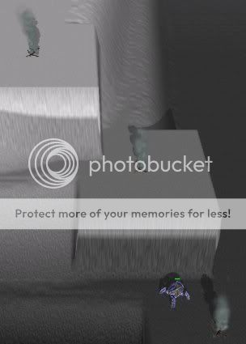
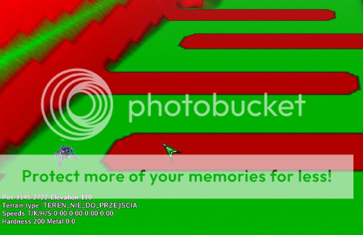
Powyższy obrazek przedstawia mapę terenu na jaki może wejść dana jednostka. W lewym górnym rogu ekranu widoczny jest fragment klifu znajdującego się na pierwszym "tarasie" naszej mapy. Na klifie widać normalnie wygenerowaną mapę terenu na jaki może wejść ta jednostka (czerwony kolor oznacza teren niedostępny). Na płaskim terenie (fragment zaznaczony kursorem) widać wpływ mapy rodzaju terenu na mapę terenu na jaki może wejść jednostka. Normalne jest że dana jednostka nie będzie mogła poruszać się po klifie, lecz nie normalne jest aby na (wskazanym) płaskim terenie ta jednostka nie mogła się poruszać.
Zwróć uwagę na to że na naturalnym klifie na krawędzi między terenem niedostępnym a terenem o normalnej dostępności dla przemieszczania jednostek występuje faza pośrednia widoczna jako odcień czerwonawo-zielonawy. Teren ten oznacza, że można się po nim poruszać lecz jednostka będzie go przemierzać znacznie wolniej niż ten który zaznaczony jest kolorem zielonym.
Jeżeli zamierzasz na mapie umieścić teren przez, który nie można się przemieszczać to koniecznie powinieneś ręcznie dodać także teren pośredni na granicy terenu przez który nie można przejść. Jest to konieczne ponieważ czasami zdarza się że jednostki "zapędzą się" na teren nie do przejścia i utkną na nim mimo że w ogóle nie powinny na niego wejść.
Dlaczego tak się dzieje? ponieważ gra ma wbudowany system automatycznego znajdowania najszybszej ścieżki dla jednostek. Jeżeli każesz kilku jednostkom przemieszczać się wzdłuż ścieżki na granicy terenu, na którym nie ma prawa się znajdować, może się zdarzyć że jedna jednostka "wepcha" inną na teren po którym tamta się nie może przemieszczać i w ten sposób ta druga jednostka utknie na tym terenie. Jedynym sposobem na zabranie takiej jednostki z takiego terenu jest uniesienie jej transportową jednostką latającą.
Aby uniknąć takich niespodzianek dobrze jest nie stosować terenu nie do przejścia, lub otoczyć go terenem o pogorszonej lecz nie nie możliwej do ruchu powierzchni. W ten sposób mechanizm znajdowania najszybszej ścieżki wykluczy teren niemożliwy do przejścia oraz teren sąsiadujący z nim z ścieżki. Nawet jeśli zdarzy się, że jakaś jednostka zostanie wepchana na teren sąsiadujący z terenem nie do przejścia, to wydostanie się z niego "o własnych siłach" i wróci na najszybszą ścieżkę.
Mapa rodzaju terenu nie musi być wykorzystywana wyłącznie do pogarszania szybkości przemieszczania się. Można użyć jej do poprawienia prędkości jednostek. Wtedy jednostki będą chętniej korzystały z terenu oznaczonego w ten sposób na mapie rodzaju terenu.
Przykładem tego może być mapa NarrowValleyR1 mojego autorstwa, na której jednostki jeżeli mają przemieścić się z lewej strony na prawą stronę mapy wybiorą drogę przez teren górzysty zamiast przemieszczać się po prostej linii przez płaski teren umieszczony najniżej.
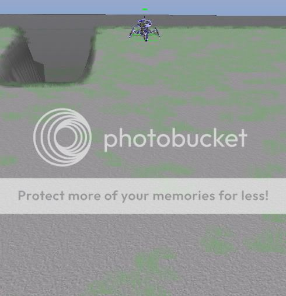
Powyższy obrazek przedstawia miejsce, w którym znajduje się trawa umieszczona na mapie "ozdób terenu". Jednostka na obrazku znajduje się w punkcie o największej ilości trawy (kolor niebieski 255) i w miarę oddalania się od tego punktu ilość trawy maleje (co odpowiada malejącemu natężeniu koloru niebieskiego na mapie ozdób terenu).
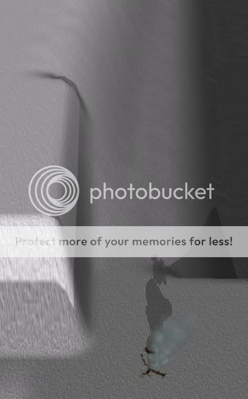
Na powyższych obrazkach przedstawiony jest ten sam fragment mapy. Różni je jednak fakt, że obrazek po prawej stronie został wykonany na mapie w wersji z wygładzonym terenem. Na obrazku po prawej klif jest znacznie łagodniejszy niż na obrazku po lewej stronie. Widać również że ostry klif z lewego obrazka (ten na którym znajduje się otwór geotermiczny) także został zaokrąglony na krawędziach.
Efekt ten jest nie pożądany na mapach metalowych, na których krawędzie mają być zaostrzone, a dobrym rozwiązaniem jest na mapach naturalnie wyglądających.
Efekt taki można uzyskać poprzez dodanie przełącznika:
-l
na końcu polecenia jakim kompilujemy naszą mapę MapConvem w celu uzysktania plików SMT i SMF
czyli może ono wyglądać w następujący sposób:
mapconv -c 0.5 -x 500 -n -50 -o KONCOWA_NAZWA_MAPY.smf -t TEKSTURA_MAPY.bmp -m MAPA_METALU.bmp -a MAPA_WYSOKOSCI.bmp -f MAPA_OZDOB_TERENU.bmp -y MAPA_RODZAJU_TERENU.bmp -i -l
Jeśli chcesz stworzyć mapę na której część terenu będzie wygładzona a część terenu będzie miała zaostrzone krawędzie (na przykład połączenie mapy metalowej z naturalnymi ukształtowaniami gór) to powinieneś robić mapę wysokości narzędziem obsługującym 16-bitową precyzję kolorów, na przykład darmowego Cinepaint'a.
Gimp obsługuje tylko pliki z 8-bitową precyzją kolorów, dlatego jesli zrobisz mapę w 16-bitowej precyzji powinieneś/aś wyeksportować ją do pliku o 16-bitowej precyzji (takiego jak pliki typu TIFF) i pliku o 8-bitowej precyzji takiego jak BMP.
Dlaczego ?
Ponieważ:
- plik TIFF możemy zamienić na plik RAW przy pomocy narzędzia ImageMagick (Opiszę to na końcu tutoriala) i taki plik zostanie przerobiony przez MapConva na mapę wysokości o takiej precyzji jakbyśmy używali przełącznika -l dla klifów i zachowamy ostrość elementów mapy wysokości, które mają być zaostrzone. Inaczej mówiąc uzyskamy lepiej dopracowaną mapę wysokości.
- plik BMP będzie nam potrzebny w Gimpie do zrobienia pozostałych elementów mapy w tym tekstury.
Realistyczna tekstura
jak na razie doszliśmy do miejsca, w którym mamy gotową mapę. Nasza mapa nie jest może najlepsza, ale do tej pory przedstawiłem w tym tutorialu wszystkie podstawowe kroki potrzebne do wykonania mapy.
Jako, że sprawy życia codziennego okazały się dla mnie ważniejsze - edycję tego tutoriala muszę przerwać do czasu, w którym znów znajdę czas aby dokończyć go - uzupełnić o sekcje "dopieszczające" (dopracowywujące - trudne słowo :P) naszą mapę - tak aby była godna uwagi gracza.
Teksturę naszą będziemy robić przy pomocy warstw i narzędzia do wykrywania krawędzi (używanego na mapie wysokości). W skrócie będzie to algorytm "Sobel" o dużych wartościach, później wynik przekształcenia obrazu tym narzędziem rozmyjemy "gaussem", a następnie przekształcimy w maskę dla jednego z elementów krajobrazu.
Elementy które mają być niezależne od mapy wysokości umieścimy głównie przy pomocy warstw.
Kroki te będziemy powtarzać tyle razy ile różnych elementów tekstury będziemy chcieli mieć na mapie.
Oprócz tekstury opiszę jeszcze dodawanie trójwymiarowych elementów krajobrazu innych niż drzewa czy trawa.
Jeśli wpadłeś w szał inwencji twórczej prawdopodobnie dalej poradzisz sobie sam bez tego tutoriala...